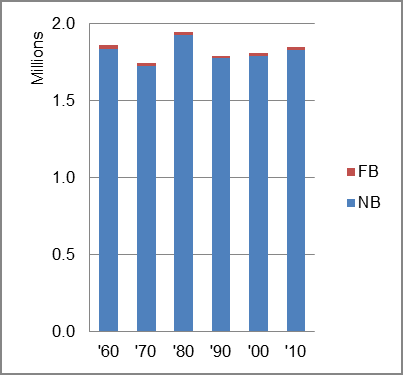

The foreign-born (FB) population decreased from 23,836 in 1960 to 22,511 in 2010. That was a decrease of 5.7 percent. The foreign-born share decreased from 1.3 percent in 1960 to 1.2 percent.
The share of the overall population that was native-born (NB) decreased by 0.3 percent.
West Virginia: Population 1960-2010 
The first chart below shows the three population change factors for three periods adjusted for annual average amounts. The largest factor adding population was different in each period, and the amounts of increase were very small.
The second chart shows the same data but with an adjustment to reflect births to immigrants shifted to NIM. In it, the same variation in principal factor contributing to population increase continued.
West Virginia: Sources of Population Change 1990-2013 West Virginia: Sources of Population Change (Adjusted) 1990-2013
B-D NDM NIM B-D NDM NIM 90-'99 71.1% 10.9% 18.1% 90-'99 49.5% 10.9% 39.6% 00-'09 neg. 75.3% 26.5% 00-'09 neg. 56.3% 43.7% 10-'13 neg. 35.3% 64.7% 10-'13 neg. 17.1% 82.9%